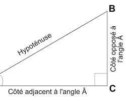

Théorème de Pythagore

Dans un triangle rectangle, le carré de la longueur de l’hypoténuse
est égal à la somme des carrés des longueurs des deux autres côtés.
Si le triangle ABC est rectangle en C, alors :
AB² = AC² + BC²
AB est l’hypoténuse.
Réciproque du théorème de Pythagore
Si, dans un triangle ABC, on a :
AB² = AC² + BC²
alors le triangle ABC est rectangle en C.
Aire d’un triangle rectangle
Un triangle rectangle peut être considéré comme la moitié d’un rectangle
construit sur ses deux côtés perpendiculaires.
Aire = (AC × BC) / 2
Si l’aire d’un triangle est égale au produit de deux côtés divisé par 2,
alors ce triangle est rectangle à l’angle formé par ces deux côtés.
Cercle circonscrit
Dans un triangle rectangle, le milieu de l’hypoténuse
est à égale distance des trois sommets.
Propriété du cercle circonscrit

Le milieu de l'hypoténuse est le centre du cercle circonscrit.
Médiane = AB / 2
Tout triangle dont un côté est un diamètre d’un cercle
et dont le troisième sommet est sur ce cercle est rectangle.
Hauteur issue de l’angle droit
Soit ABC un triangle et H le pied de la hauteur issue de C sur le côté AB.
CH² = HA × HB
AC² = AH × AB
BC² = BH × AB
CH × AB = AC × BC
Si l’une de ces relations est vérifiée,
alors le triangle ABC est rectangle en C.